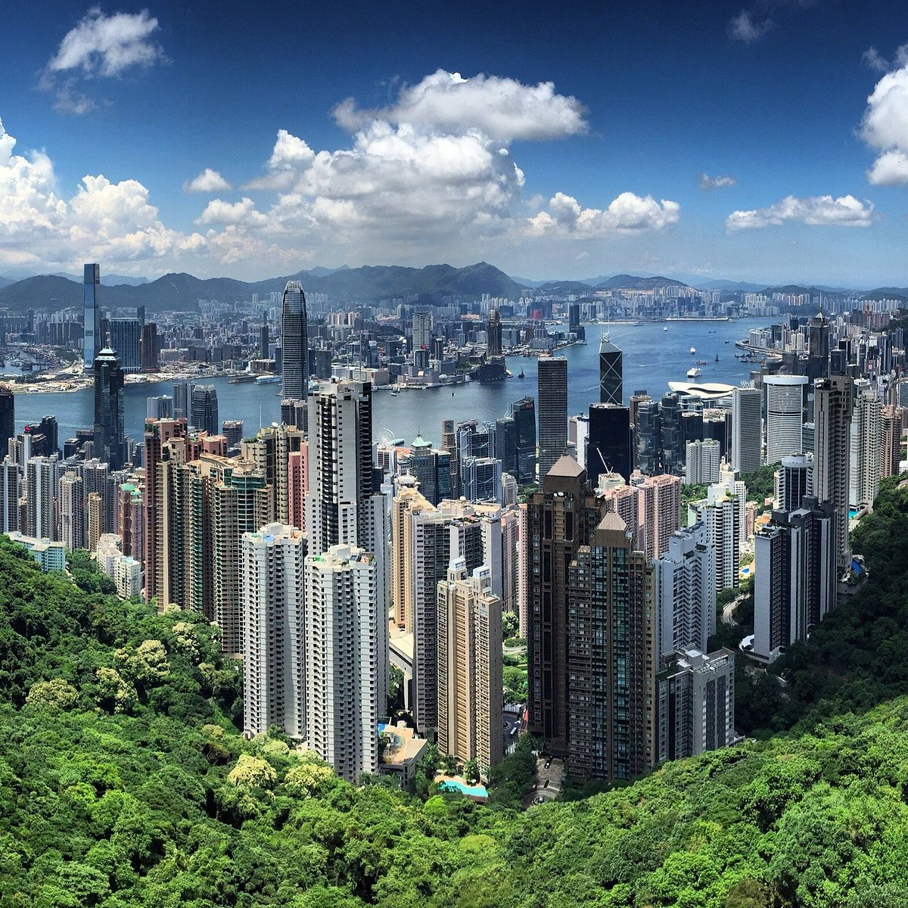

Plan Your Trip with These Sample Itineraries

Day 1: Exploring Central and Victoria Peak
Discover the heart of Hong Kong with this exciting day plan.
- Morning: Ride the Peak Tram to Victoria Peak for panoramic views.
- Afternoon: Visit Man Mo Temple and Central's hidden gems.
- Evening: Stroll through Soho and enjoy local cuisine.

Day 2: Kowloon and Cultural Highlights
Experience the vibrant culture of Kowloon with these activities.
- Morning: Explore Wong Tai Sin Temple.
- Afternoon: Visit the Hong Kong Museum of History.
- Evening: Enjoy the Symphony of Lights at Victoria Harbour.

Day 3: Hong Kong Disneyland Adventure
Spend a magical day exploring the wonders of Hong Kong Disneyland.
- Morning: Enter the park and start with Adventureland attractions.
- Afternoon: Enjoy Fantasyland and meet iconic Disney characters.
- Evening: Conclude with the spectacular fireworks at the castle.